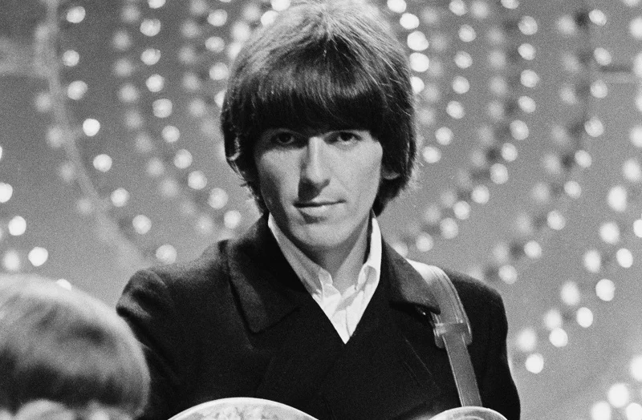
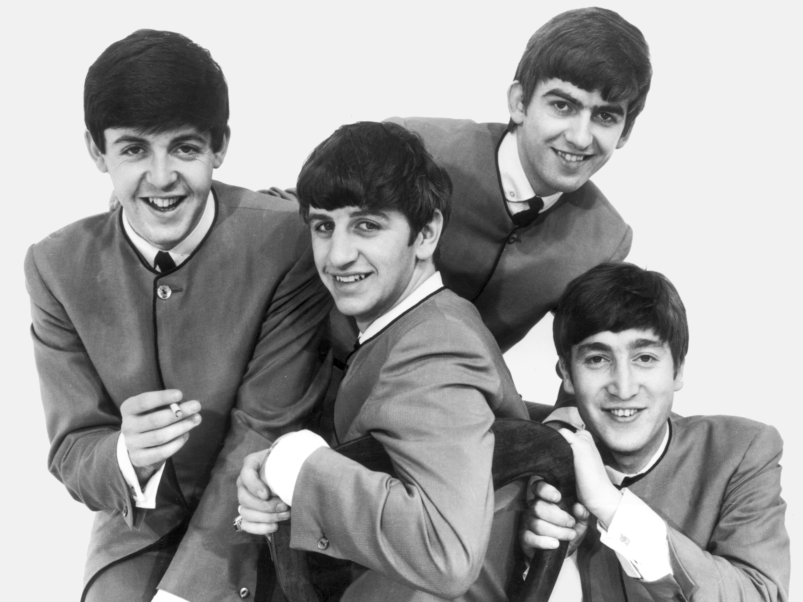
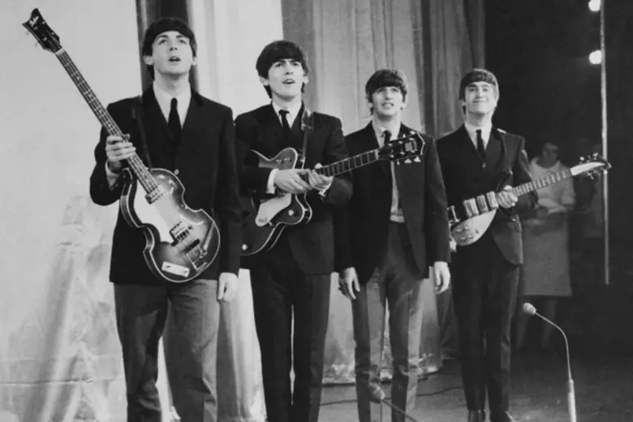
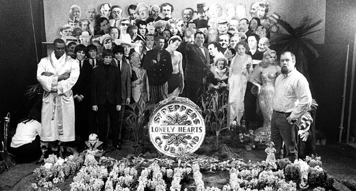
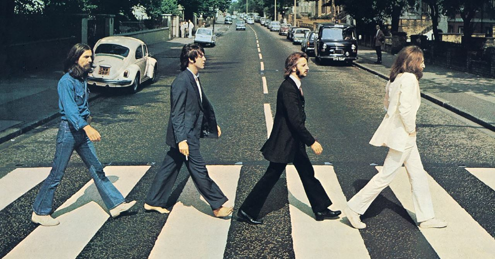

Do porão abafado do Cavern Club aos maiores palcos do planeta, a jornada de George Harrison foi muito além de ser um dos quatro garotos de Liverpool. Entre a busca espiritual, o talento silencioso na guitarra e composições geniais, esta é a história de como o "quiet beatle" encontrou sua própria voz e se tornou uma lenda eterna.
Ler biografia →Álbuns de Estúdio com os Beatles
Álbuns Solo
Milhões de Discos vendidos em Carreira solo
Anos de Carreira
Em pouco mais de sete anos de revolução nos estúdios com os Beatles, George Harrison testemunhou e ajudou a transformar o som da banda: do pop cru dos primeiros singles à experimentação psicodélica e à introdução da sonoridade indiana. Cada disco é o reflexo de um jovem músico em busca da sua própria identidade artística, lapidando o seu gênio criativo no coração do maior fenômeno da história.
Ver Legado →

1960
Durante os anos iniciais tocando exaustivamente em Hamburgo e no Cavern Club em Liverpool, o grupo finalmente se consolida com a entrada de Ringo Starr na bateria. Para um jovem George Harrison, então com apenas 17 anos, esse período de intensas apresentações ao vivo foi a escola definitiva para forjar sua identidade musical e sua presença de palco.

1962
O lançamento do primeiro single oficial sob a tutela do produtor George Martin marca o estopim da Beatlemania. A faixa escalou rapidamente as paradas, colocando George e seus companheiros no epicentro de uma revolução cultural sem precedentes.

1967
Com o lançamento do aclamado álbum "Sgt. Pepper's Lonely Hearts Club Band", a banda redefine os limites da música pop. Exaustos das turnês mundiais, George e os companheiros abandonam os palcos e abraçam a experimentação total no estúdio — fase em que George aprofunda ainda mais sua imersão na música indiana, introduzindo instrumentos tradicionais como a cítara no coração do som dos Beatles.

1969
A icônica travessia na faixa de pedestres e o lendário concerto surpresa no telhado marcam os últimos grandes momentos do grupo. Mesmo em meio às crescentes tensões internas e ao seu amadurecimento como compositor solo — que culminaria em seu grandioso repertório próprio —, George entrega contribuições definitivas para fechar com maestria a trajetória coletiva da banda.
Os Beatles existem em algum lugar em tempo espacial. Mas, por enquanto, enquanto estamos neste planeta, sou apenas eu."